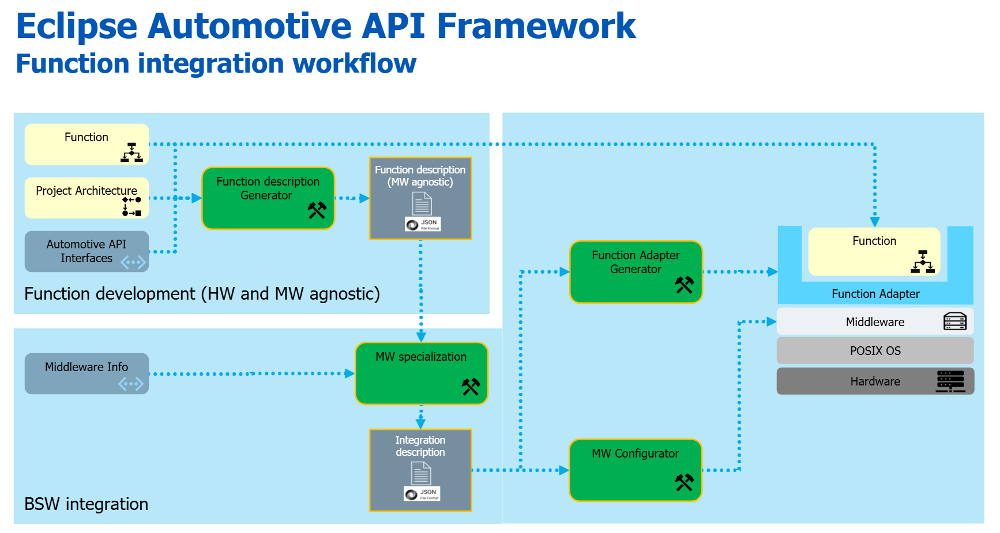
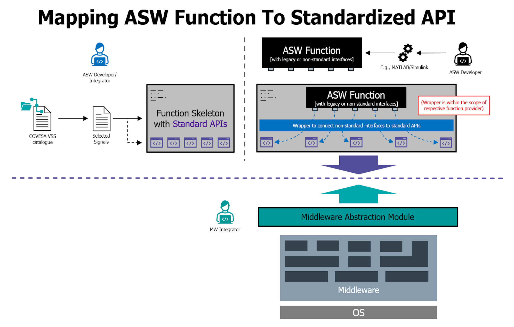
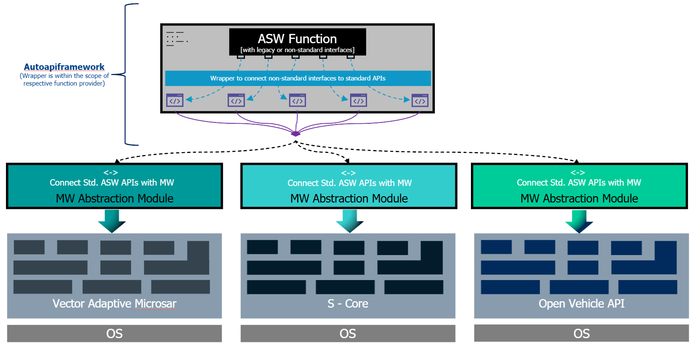
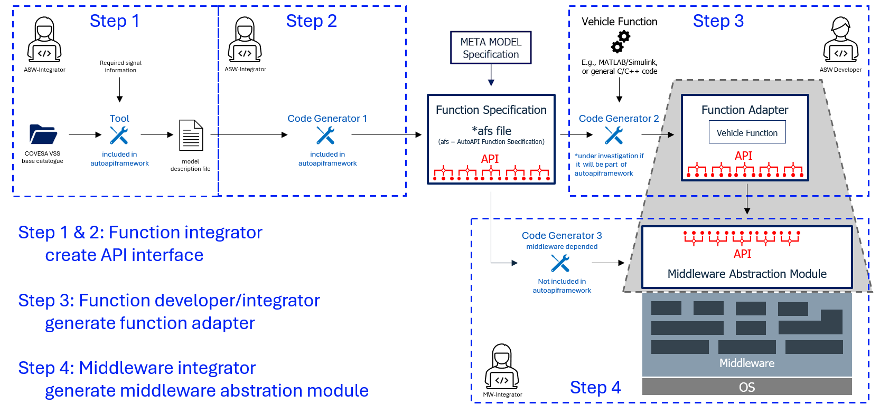
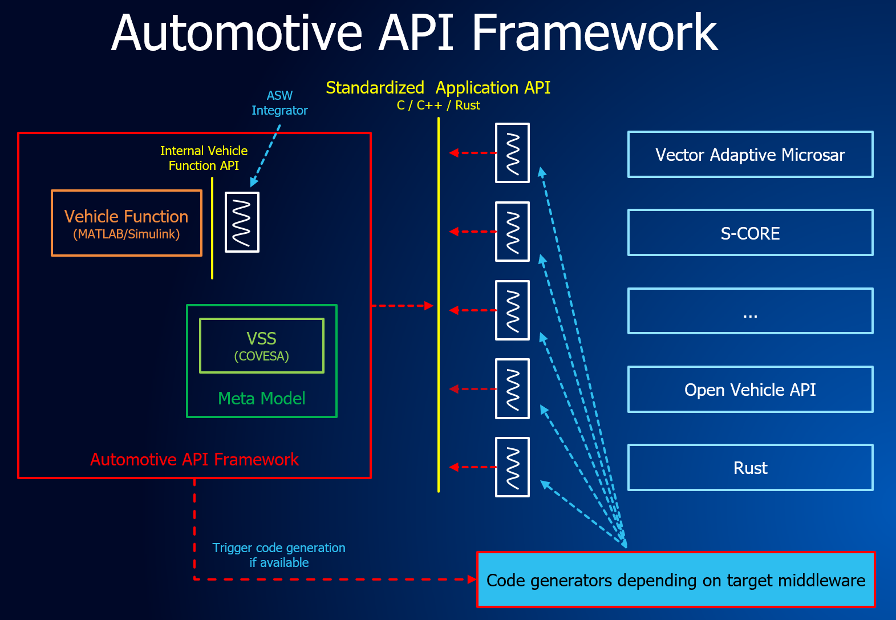
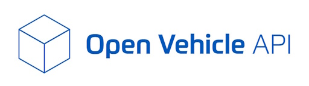

Background
Developing automotive applications for microprocessor-based HPCs is challenging because application code from conventional systems is often tightly coupled to the middleware and operating system. Low‑level middleware APIs add complexity, requiring developers to write and maintain extensive boilerplate for integration and testing, while also demanding deep automotive-specific knowledge of the HPC software stack.
Scope
The Eclipse Automotive API Framework decouples application logic from the middleware stack and operating system in automotive HPC systems by providing an application-facing interface and defining the accompanying workflow.
Standardized Application API#
How the Application Software Developer Meets the Middleware Integrator: Through a Standardized API

We aim to introduce a standardized application API that also incorporates safety-relevant aspects. Such an API enables a clear separation between the vehicle-function developer (or vehicle-function integrator) and the underlying middleware. This approach creates platform independence while maintaining safety guarantees.
With a standardized application API, application code remains stable. Only the generated middleware glue code changes per platform.
This separation ensures:
the application remains untouched and re-certifiable
platform-specific safety mechanisms are handled reliably by the generator
For testing and demonstration purposes, the vehicle function could, for example, run on top of the open-source project Eclipse Open Vehicle API, while later the same function would operate on the target middleware without requiring changes to the application logic.
Collaboration wanted#
We are currently working on defining a safety compliant C++ application interface intended for ASIL B (maybe even up to to ASIL D) capable vehicle functions.
The goal is to create a middleware independent API that ensures deterministic behavior, robust error propagation and strict memory safety guarantees in line with ISO 26262. This includes defining safe state transitions, fault containment boundaries, end to end communication integrity, and standardized diagnostic reporting for safety critical services.
The overarching objective is to enable developers to implement ASIL relevant vehicle logic without coupling it tightly to specific middleware frameworks or transport layers.
We are seeking for collaboration partners interested in discussing architectural concepts, validating safety mechanisms and contributing to enhancements aligned with Covesa — especially around portable service definitions, API safety extensions, and cross platform execution models.
Production Readiness#
The target of Automotive API Framework is to integrate with S-CORE or Vector Adaptive Microsar to be production-ready, whereas Open Vehicle API mentioned below is just for demonstration purposes.

Workflow & Auto Code Generation#
This project focuses on the standardization of application APIs and the separation of vehicle function implementations from the underlying middleware.
The following illustration describes four processing steps, where steps 1 and 2 may be treated as a single combined step. These steps will be supported by tooling, including automatic code generation.
Certain tools will be implemented within the Automotive API Framework, while others will be handled by the respective middleware.

The following figure presents an alternative representation of the Eclipse Autoapiframework concept already described in this document.

With a standardized application API, code generation for the target middleware is possible, though only to a certain extent. These code generators are part of the target-middleware implementation and will not be included in the Eclipse Autoapiframework.
Why are auto code generators important?
1. Reduced Human Error 2. Manually writing middleware-integration code is error-prone. A code generator creates the same logic consistently and deterministically, which eliminates:
typos
incorrect API usage
inconsistent patterns
forgotten safety checks
Less manual coding → fewer systematic errors.
Enforced Safety Patterns
Code generators can embed proven safety concepts, such as:
safe state handling
range checks and input validation
timing and deadline monitoring hooks
memory-access restrictions
exception/path handling patterns required for ASIL levels
This ensures every generated component has the same safety mechanisms built-in—no developer forgets to implement them.
Traceability and Compliance with ISO 26262
traceability from requirements → design → code
reproducible builds
evidence of systematic-error prevention
A generator allows:
automatic tracing from API model → generated code
formally verified generation rules
consistent output across versions
compliance documentation for the generator itself
This reduces certification effort for each project.
Faster, Safer Updates and Refactoring
When middleware or safety requirements change, the generator can be updated once—and then regenerate safe conformant code for all applications. No risk of missing updates in manual code.
Improved Testability, generated code is:
structurally predictable
easier to analyze automatically
easier to unit-test (same patterns everywhere)
easier to integrate with static analysis tools
Predictable structure = better tool support = fewer safety defects.
Eclipse Autoapiframework can play a major rule on this.
Eclipse Open Vehicle API#

As mentioned above only for demonstration purposes we will use the open-source project Eclipse Open Vehicle API as an example of middleware. It is not meant to become proction-ready.
It is a modular, component-based C++ framework that provides a scalable and platform-abstracted vehicle software architecture. The communication between the components uses interfaces, so its ideally for demonstrating the Eclipse Autoapiframework.
Right now, there is no code generator available. Later such code generator will be in the project itself rather than here in the Eclipse Autoapiframework.
The Eclipse Open Vehicle API contains tools and a runtime to create a vehicle abstraction interface for signal- and event-driven functions.
Component-based
Transfer existing signal-based ECUs to HPC
Implement new signal- and event-based vehicle functions
Vehicle independent implementation (vehicle abstraction)
Multi-vendor - open for play-store approach
Standardized interface for functions
Automate as much as possible - reduce coding
Allow HIL and SIL
Safety aspects for use with chassis and ADAS functions
Documentation: Open Vehicle API
On GitHub: Eclipse Open Vehicle API